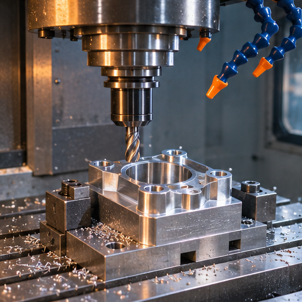

← Back to financing services
Machinery Finance
Equipment Loans
Discuss funding for industrial machines, commercial equipment and production technology.

Equipment that may be considered
The exact eligible list depends on the lender and the type of asset, its age, condition and intended use.
- CNC, lathe and other metalworking machinery
- Packaging, filling, labelling and processing equipment
- Production-line and factory automation systems
- Construction, earthmoving and material-handling equipment
- Commercial machinery for manufacturing or service operations
Typical information required
Used equipment, imported assets and specialised machinery may require additional checks.
- Supplier quotation and technical specification
- Applicant business and identification documents
- Bank statements and existing repayment records
- Proof of business address and operations
- For used assets, invoice, valuation and ownership details
Enquiry process
- Identify the equipment. Record the machine type, specification and supplier.
- Share the quote. Include cost, taxes, delivery and installation details.
- Review eligibility. The lender assesses the asset, borrower and repayment capability.
- Confirm purchase and disbursement. Approved terms and delivery conditions are finalised before payment.
Discuss an equipment finance requirement
Keep the supplier quotation and machine specifications ready.